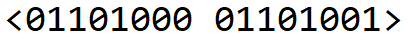

Class: Biometrics and Cryptography
In this project my group consisting of 4 other members were assigned to design, develop, and implement a fingerpring scanner. We used the NIST Biometric Image Software (NBIS), which was originally created for the FBI and Homeland Security, to read and map the minutia points from a finger.
To capture the fingerprint we developed a Python program to run the NBIS software. When our Python program runs it presents the user with 3 options:
For the desgin of our case we chose to have all componets in a single box. To model it we used a free software called TinkerCAD. This took us several weeks to perfect the design since we had to have the measurments exact for each componet that we were including in the box design.
From this project I was able to obtain more knowledge on topics involving but not limited to cryptography, programming, 3D design, and biometric systems. For this project my group received the highest grade in the class which was a 100%.